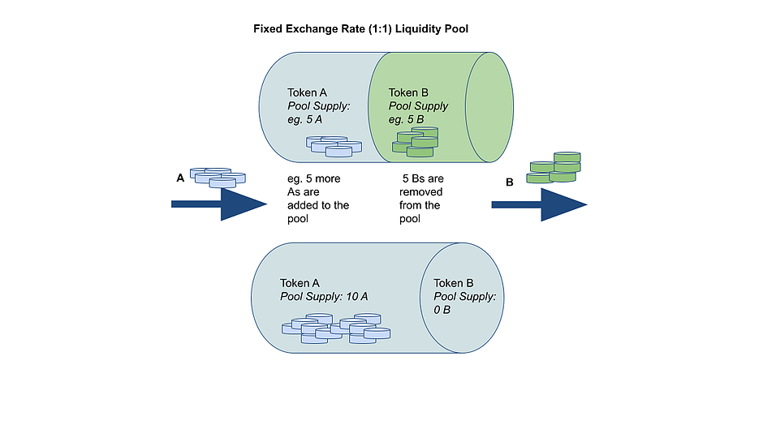
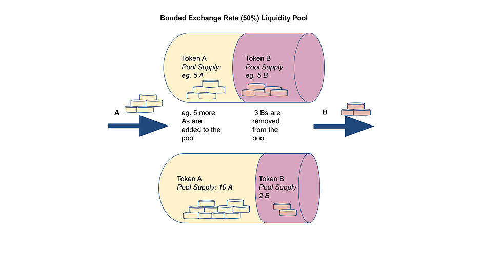
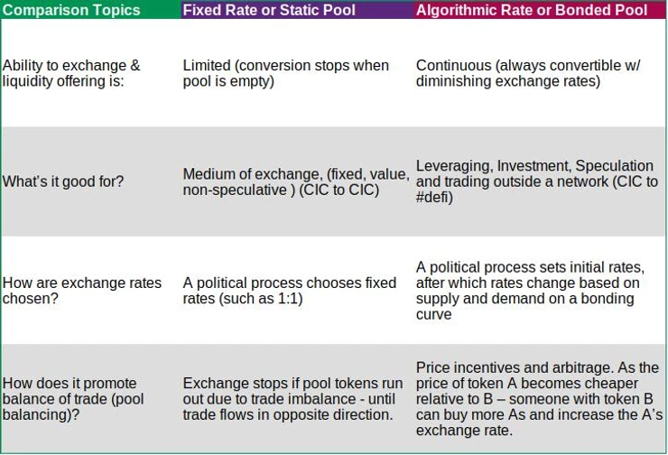

Static vs Bonded Liquidity Pools for CICs
As communities create their Community Inclusion Currencies as a credit against their future production, projects and excess capacity, Grassroots Economics is looking at various ways to connect these tokens together and as well to other networks. Below I'll describe and contrast two approaches, namely a Fixed vs Algorithmic Rate liquidity pools. But before that I just want to give a simple overview of what a liquidity pool is.
For the blockchain and #defi folks they are probably familiar with the Bonded Pool like you can find with Uniswap or in the Bancor Network, but lets start with its sibling the Static Pool - which simply is a contract holding 2 tokens that are exchangeable to each other.
In the fixed exchange rate or static pool above. A community creating a CIC can decide to add some of their CIC A token supply to a common pool along with some tokens from another community B. The pool contains A and B tokens.
Someone holding A tokens pays some A tokens to someone holding B tokens, the pool accepts A tokens from A and gives B tokens to B. Now anyone can push in A tokens to that pool and get out B tokens with a 1:1 fixed exchange rate - that is, until there are no more Bs in the pool. At which point someone from community B would need to add some Bs to re-balance the pool before any more exchange is possible.
This create a simple way for community A and B to trade with each other with a limited amount of tokens in the pool.
Next let's talk about a Bonded pool - the kind you will find in Uniswap or the Bancor Network.
In the algorithmic exchange rate or bonded pool above. A community creating a CIC can similarly decide to add some of their CIC A token supply to a common pool along with some tokens from another community B.
Now if anyone wants to push in A tokens to that pool they can get out B tokens with an initial 1:1 exchange rate - but every time you dd more As you get less and less Bs out. This can virtually go on forever until for each A added you only get 0.0000001 Bs and so on.
This create another way for community A and B to trade with each other with continuous liquidity but changing exchange rates. There can be a lot more added to the liquidity contracts, such as oracles that can adjust prices and investment shares that can grow based on exchange fees which are also options. Communities could also create DAOs and vote on which pools are allowed into the network. But let's stick with the simple versions mentioned above and compare them a bit further:
The table above gives a few ways to compare the types of liquidity pools. While the Bonded Pool allows for continuous liquidity and a market price stabilization effect, it also creates a variable exchange rate that is often hard to deal with for regular commerce. In the extreme case, where many A's have been converted to B (changing the rate) and one CIC A users sends 10 tokens to buy tomatoes and they turn into only one B token - the tomato seller could demand more tokens - but this is quite cumbersome.
On the contrary with a Static Pool, one side of the pool could simply run out causing trade to stop until there is trade in the opposite direction. This could be equally frustrating for commerce and require the two communities come up with a regular method of trade balance or to allow for multiple non-exchangeable tokens co-existing in their wallets.
If communities connect their CICs to a basic income or network token like Sarafu in a 1:1 Static Pool - all such CICs would automatically be exchangeable 1:1 with each other. This is appealing because it creates a well defined common pool of tokens connected through a network token. This method combines the concept of a UBI with a credit system - described briefly here
Also note that both types of pools could be used to connect a CIC with some other non-CIC token (like Eth or DAI) who's value might be fluctuating or unknown relative to the CICs - in this case having market supply and demand to establish that price over time might be preferable using a Bonded Pool. Note that many such pools can co-exist in the same network, connecting the same tokens. So connecting UBI and CICs on static pools while also connecting to non-CICs via bonded pools could allow for in-network 1:1 exchanges and variable/market rate exchanges against foreign tokens (e.g. Eth or stable coins).
We're excited to be building infrastructure - using the open source Bancor DEX contracts -that can accommodate an extremely diverse set of pools - creating really decentralized typologies for common pooling of Community Inclusion Currencies.